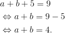

Divizibilitatea numerelor naturale-exerciții rezolvate
- Scrieți numerele naturale de forma
 , multiplii pentru
, multiplii pentru  și
și  .
.
Rezolvare:

- Arătați că numerele de forma
 sunt divizibile cu
sunt divizibile cu  , unde
, unde  .
.
Rezolvare:
Încercăm să scriem numărul ca și produs, în care unul dintre factori să fie .
Aplicând proprietățile puterilor (regulile de calcul cu puteri), avem:
 .
.
- Fie mulțimea
 și mulțimea
și mulțimea  . Calculați
. Calculați  și
și  .
.
Rezolvare:
Atunci:

- Determinați toate numerele de forma
 , știind că numerele sunt divizibile cu
, știind că numerele sunt divizibile cu  , iar
, iar  .
.
Rezolvare:
Cum  , înseamnă că
, înseamnă că  poate fi
poate fi  sau .
sau .
Cum  este prima cifră, înseamnă că aceasta nu poate fi .
este prima cifră, înseamnă că aceasta nu poate fi .
Dacă  , atunci:
, atunci:

Cifrele care verifică relația de mai sus sunt:

Numerele căutate sunt:  .
.
Dacă  , atunci:
, atunci:

Cifrele care adunate dau suma  sunt:
sunt:

Numerele căutate sunt  și
și  .
.
În concluzie, numerele care verifică proprietățile din enunț sunt  și .
și .
- Scrieți toate numerele cuprinse între
 și
și  care sunt divizibile simultan cu
care sunt divizibile simultan cu  și cu .
și cu .
Rezolvare:
Știm că un număr este divizibil cu dacă ultima sa cifră este sau  .
.
Un număr este divizibil cu daca ultima sa cifră este sau .
Pentru ca un număr să fie divizibil cu și cu simultan, ultima sa cifră trebuie să fie .
Numerele căutate sunt:  și
și  .
.
- Arătați că dacă
 , atunci
, atunci  .
.
Rezolvare:

Știm că .
Cum numărul  este un produs în care unul din factori este
este un produs în care unul din factori este  , rezultă că
, rezultă că  .
.
Din proprietățile relației de divizibilitate avem că  și prin urmare
și prin urmare  .
.

- Scrieți:
- cel mai mare număr de trei cifre divizibil cu
 ;
; - cel mai mic număr de patru cifre divizibil cu ;
- cel mai mare număr de două cifre divizibil cu și cu ;
- cel mai mic număr de trei cifre distincte divizibil cu și cu .
- cel mai mare număr de trei cifre divizibil cu
Rezolvare:
- Cel mai mare număr de trei cifre divizibil cu este deoarece
 , iar
, iar  .
. - Cel mai mic număr de patru cifre divizibil cu este
 deoarece
deoarece  , iar
, iar  .
. - Pentru ca numărul căutat să se dividă cu , acesta trebuie să fie par. Căutăm cel mai mare număr par care se împarte exact la și la :

Așadar, numărul căutat este  .
.
- Cum numărul pe care îl căutam este divizibil cu , ultima sa cifră este sau .
Dacă ultima cifră e , atunci cel mai mic număr de trei cifre distincte divizibil cu este  .
.
Dacă ultima cifră e , atunci cel mai mic număr de trei cifre distincte divizibil cu este 
 .
.
Cum  , rezultă că numărul căutat este .
, rezultă că numărul căutat este .
- Scrieți ca sumă de numere prime următoarele numere:
 .
.
Rezolvare:

Rezolvare:
Cum suma numerelor este număr impar, iar cele două numere sunt prime, rezultă că unul dintre cele două numere este par și prim.
Singurul număr prim care este și par este .
Rezultă că unul dintre termeni este , iar celălalt va fi  .
.
- Determinați toate numerele prime de forma
 mai mici decât
mai mici decât  , unde
, unde  .
.
Rezolvare:
Dând valori lui  , obținem:
, obținem:

Ne oprim la  , deoarece dând lui valori mai mari sau egale cu trecem de .
, deoarece dând lui valori mai mari sau egale cu trecem de .
Numerele prime găsite sunt: , și  .
.
- Determinați
![(154,328), (1064,344) , \left [ 154,328 \right ] ,\left [ 1064,344 \right ]](https://liceunet.ro/media/webbooks/667/5940/images/equations/x0etr9pnqhvwpgwhoswdia==.gif) .
.
Rezolvare:
Descompunem numerele în produs de puteri de factori primi:


Atunci:
![\begin{align*} &(154,328)=2;\\ &(1064,344)=2^3\\&=8;\\ &\left [ 154,328 \right ]=2^3\cdot7\cdot11\cdot41\\ &=8\cdot77\cdot41\\ &=661\cdot41\\ &=25256;\\ &\left [ 1064,344 \right ]=2^3\cdot7\cdot19\cdot43\\ &=8\cdot7\cdot19\cdot43\\ &=56\cdot19\cdot43\\ &=1064\cdot43\\ &=45752. \end{align*}](https://liceunet.ro/media/webbooks/667/5940/images/equations/fovjhk8ress6b16_3dcqxa==.gif)
- Arătați că
 .
.
Rezolvare:
Presupunem că cele două numere nu sunt prime între ele, adică  .
.
În acest caz, există un număr  astfel încât
astfel încât  și .
și .
De aici rezultă că:


Din proprietățile relației de divizibilitate, rezultă că  poate divide diferența celor două numere, adică:
poate divide diferența celor două numere, adică:
![\begin{align*} &d\ |\left [ 40n+65-(40n+64) \right ]\\ &\Leftrightarrow d\ |\left (40n+65-40n-64\right )\\ &\Leftrightarrow d\ | \left [ n(40-40) +65-64\right ]\\ &\Leftrightarrow d\ | \left ( n\cdot0+1 \right )\\ &\Leftrightarrow d\ |\ 1 .\end{align*}](https://liceunet.ro/media/webbooks/667/5940/images/equations/d8dvzdwpr1ef5dy4_ja7-a==.gif)
Singurul număr care îl divide pe  este .
este .
Astfel, obținem că , ceea ce contrazice faptul că .
Deci, presupunerea făcută este falsă, adică cele două numere sunt prime între ele.
- Determinați numerele naturale
 și știind că suma lor este
și știind că suma lor este  și cel mai mare divizor comun al lor este
și cel mai mare divizor comun al lor este  .
.
Rezolvare:
Știm că  și
și  .
.
Cum este cel mai mare divizor comun al numerelor și , înseamnă că  și
și  .
.
Cel mai mic număr pe care îl poate divide este el însuși, ceea ce înseamnă că poate lua valori de la în sus.
Înseamnă că poate lua valorile .
Dacă  , atunci
, atunci  , iar
, iar  , și nu . Deci nu covine.
, și nu . Deci nu covine.
Învers, dacă  , atunci
, atunci  , iar
, iar  , și nu . Deci nu convine.
, și nu . Deci nu convine.
Nici , nici nu pot lua valori mai mari decât , deoarece adunându-le, obținem o sumă mai mare decât .